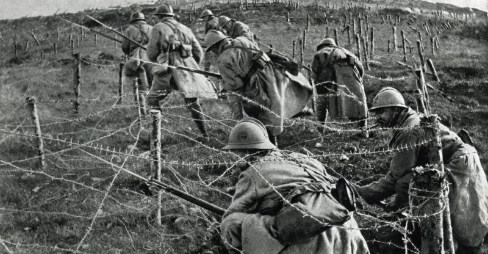

Aspectos clave de la guerra
El Inicio
La guerra comenzó tras el asesinato del archiduque Francisco Fernando en 1914.
Grandes Batallas
Batallas como la de Verdún y Somme definieron el Frente Occidental.
El Tratado de Versalles
En 1919, el Tratado de Versalles marcó el fin de la guerra.
Estadísticas clave
Muertos
Más de 15 millones de personas murieron durante el conflicto.
Países involucrados
Más de 30 países participaron en la guerra.
Duración
La guerra se extendió por 4 largos años (1914-1918).